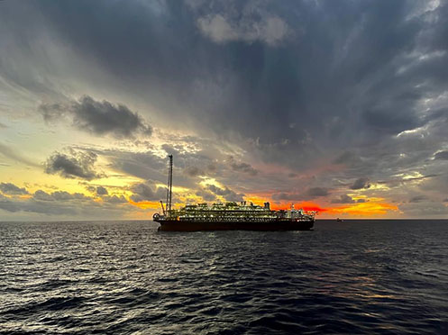
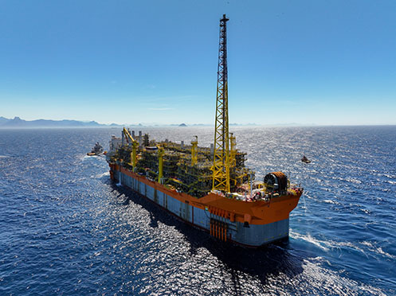
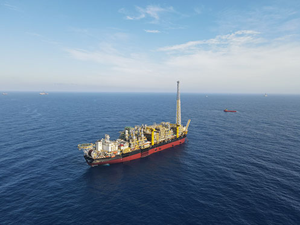

-
China National Petroleum Corporation (CNPC) is a global energy company with businesses covering oil and gas exploration and production, renewable energies, refining and chemicals, and oilfield services. Keeping a watchful eye on the future, CNPC actively implements strategies for innovation and expansion into international markets, promoting new resources and decarbonization.
It's the company's mission to pursue sustainable development and supply reliable energy to fuel not only our customers' growth, but also a happy and healthy life for everyone. This commitment aims to facilitate energy transition and achieve the goals of carbon peak and carbon neutrality, establishing CNPC as a world-class integrated global energy company that is built to last. With oil and gas assets in over 30 countries, CNPC plays a significant global role as the world’s third largest oil company by revenue.
Prior to the foundation of CNPC, the Ministry of Petroleum Industry of the People's Republic of China, founded in July 1955, was the government institution that supervised the exploration and development of oil and gas resources in the country. Later, on September 17, 1988, China National Petroleum Corporation was established as the Ministry’s agency, mainly in charge of oil and gas upstream operations. Finally, on July 27, 1998, China National Petroleum Corporation became an integrated group with businesses covering oil and gas upstream and downstream operations, as well as oilfield services and engineering. -
Founded in 2013, CNPC Brasil is an upstream energy company actively involved in the exploration and production of oil and gas and the implementation of renewable energies. The company is a wholly-owned subsidiary of CNPC (China National Petroleum Corporation), a global energy company with businesses covering oil and gas exploration and production, renewable energies, refining and chemicals, and oilfield services.
Keeping a watchful eye on the future, CNPC’s mission is to pursue sustainable development and supply reliable energy to fuel not only our customers' growth but also a happy and healthy life for everyone. This commitment aims to facilitate energy transition and achieve the goals of carbon peak and carbon neutrality, establishing CNPC as a world-class integrated global energy company that is built to last. With oil and gas assets in over 30 countries, CNPC plays a significant global role as the world’s third largest oil company by revenue.
The company tapped into the Brazilian Exploration and Production sector by joining Petrobras, Total Energies, Shell, and CNOOC in the consortium that develops the Libra Project. CNPC Brasil took a crucial step forward in the Brazilian market in November 2019, when it won the Buzios Transfer of Rights Surplus PSC, along with Petrobras and CNOOC. Also in November 2019, CNPC Brasil won the bidding to explore the Aram Block with Petrobras. -

Mero Field
Located in the Libra block, in the Santos Basin, Mero is the third largest field in terms of oil volume in Brazil. Its pre-production began in November 2017, with the FPSO Pioneiro de Libra. In April 2022, Mero 1 FPSO Guanabara started its production with a capacity of 180 Mbbl/d. It is the first of 4 FPSOs in the field, all of them already under construction, which will allow production to reach over 600 Mbbl/d in 2026. The partners in Mero Field are Petrobras (40%), Shell (20%), Total (20%), CNPC (10%), and CNOOC (10%).
Buzios Field
It is the largest field in oil volume in Brazil, located in the former Franco block, in the Santos Basin. CNPC Brasil acquired a 5% tract participation through the first Transfer of Rights Surplus PSC bidding round. Buzios Field has five active production units now, all with a production capacity of 150 Mbbl/d, and a total of 11 production units will be implemented in the upcoming years. The partners in Buzios Field are Petrobras (85%), CNPC (5%), and CNOOC (10%).
Aram Block
In exploration, the company acquired the Aram block with Petrobras in the 6th bidding round of PSC. Two exploration wells have been drilled and oil-bearing intervals have been verified through wireline logging and fluid samples, with excellent fluid quality, confirming a low level of contaminants. The Aram block is essential in the exploration of the remaining pre-salt potential in the Santos Basin. The partners in the Aram Block are Petrobras (80%) and CNPC (20%).